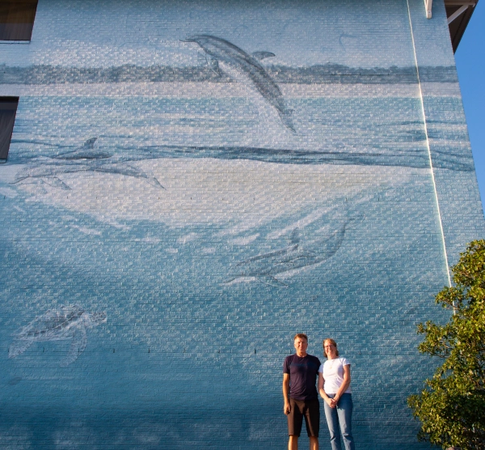

In Search of Wyland Walls

While in Virginia Beach it was time to make a decision about whether we would continue South, into the aftermath of hurricane Florence, or just call it a successful trip and stay in Virginia Beach until the weekend and just fly home from Norfolk. The weather reports from coastal North Carolina still sounded grim with the water levels still increasing. On the other hand, if we did not go now, it was unclear when we would ever be back to see the walls in Wilmington and Myrtle Beach. Given that, and the fact that Google Maps told us we could get to the walls we headed off to Wilmington.
The drive there turned out to be quite an adventure. With several of the major freeways closed, we got to tour some fairly remote areas of North Carolina. There were areas of significant flooding along the way and even some road closures that Google did not know about causing us to have to wing it some. When we got into Wilmington it was pretty shut down. There was debris everywhere and even the few things that were open seems to have issues, such as no working elevators in the hotel with the wall. The Doubletree next door was completely closed due to water damage. We did get there in daylight though and were able to see “Coastal Dolphins”.
One interesting thing Cindy noticed was that the wall is not signed. We’re not sure if that is because someone painted over the signature or repainted the wall. Given the fading, it does not look like it has been repainted so we’re not sure what the real explanation is.